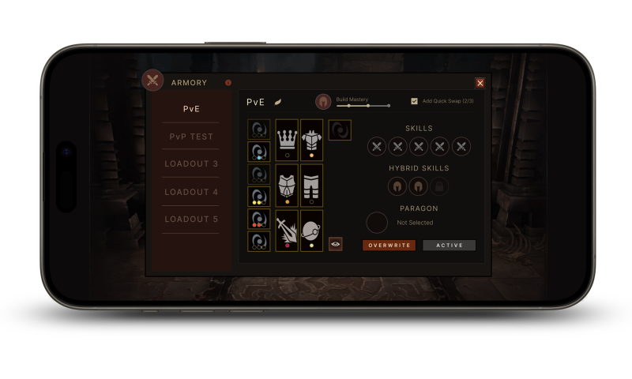
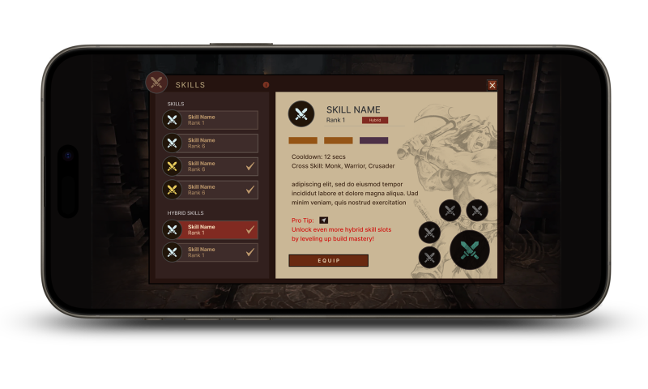
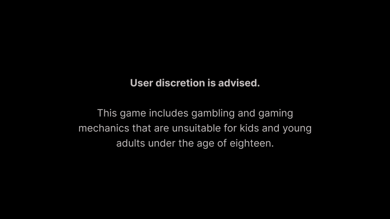
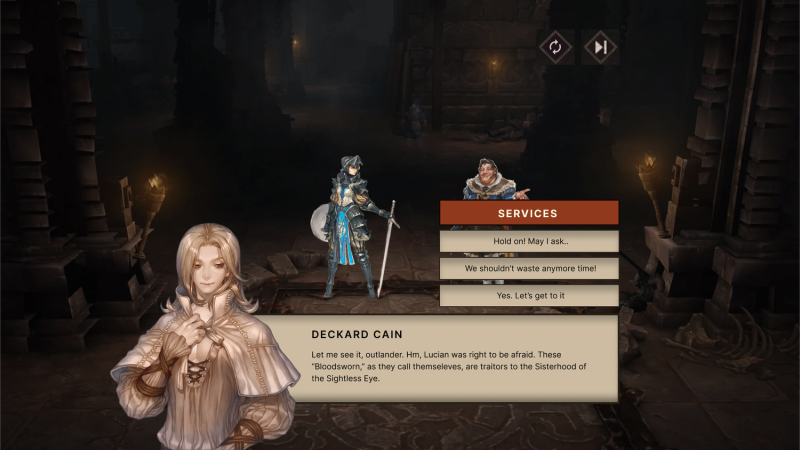
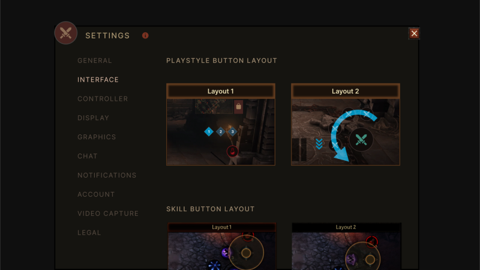
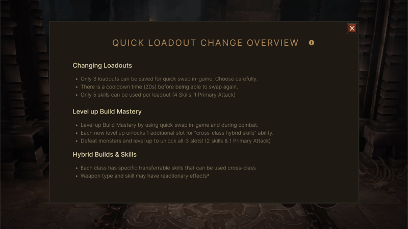
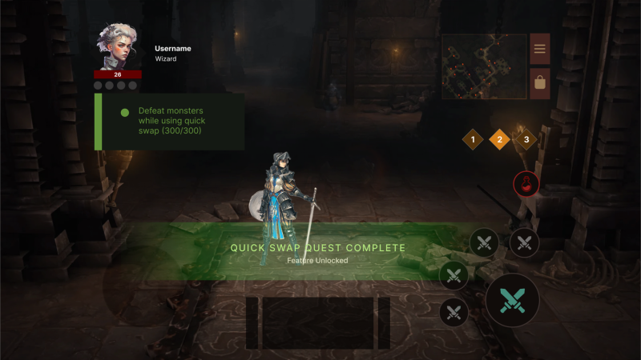

Experimental
Mobile gameplay happens in bursts—not deep sessions.

Published by Eric Le Tai
Designing for the Casual Player
Research confirms that players come in with vastly different levels of trust, time, and financial commitment.

For this class project, I used Diablo Immortal as a sandbox to explore how UX thinking can reduce the friction that drives casual players away. The trust problem the game faces isn't unique to it: games with overly aggressive monetization face player backlash, negative reviews, and retention problems that ultimately undermine revenue goals. The question this project set out to explore — how do you design for players who haven't committed yet — is one the entire industry is still wrestling with.
The mobile gaming market has matured significantly, and that's changed what "success" looks like. While global installs dropped 7% to approximately 49 billion downloads in 2024, the concurrent increases in time spent and session frequency reveal a maturing market focused on retention over acquisition. In other words, the problem isn't getting players to download games — it's keeping them.
"I know the trend now is that all mobile games 'should be free' and people are used to that by now. But I've laid down cash for several games that I was pretty sure would be pretty good and I haven't been disappointed…"
— Chris Nash, player research respondent
Studios are increasingly focused on retaining high-value players and building ad-to-experience flows that favor sustained play over fast turnover. This is exactly the kind of problem that UX is positioned to solve, and exactly the tension this project was designed to explore.


Rather than designing only for business outcomes, the focus was on building rapport with players at different levels of commitment and using that understanding to propose interface improvements that feel rewarding, not manipulative.
One of the more useful frameworks developed here was a three-tier player spectrum: Free-to-Play, Subscription, and Play-to-Win.




